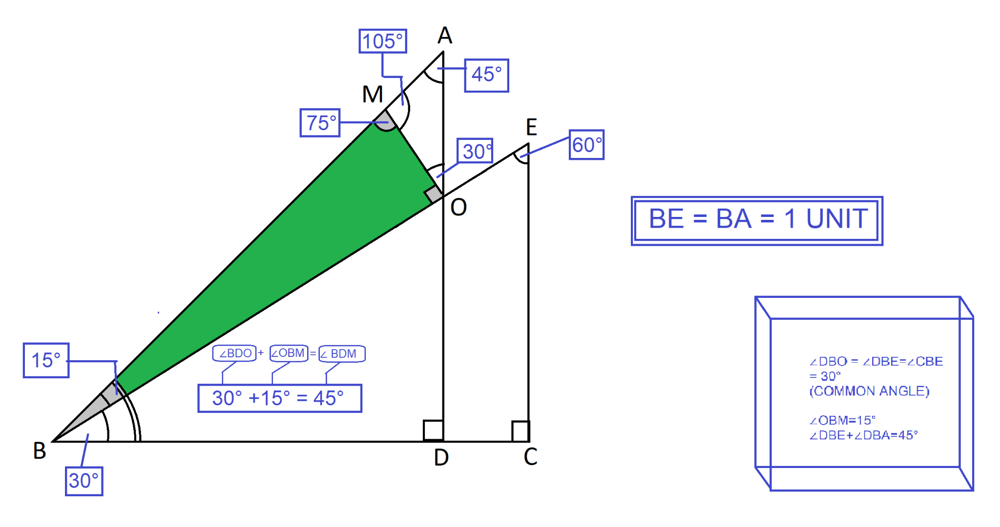

Angle Sum & Angle Difference
Choose a method and follow the construction before we turn it into equations.

01 · What do we already know?
Before calculating anything, collect the facts that are already known. We will use these known trigonometric values to reach the smaller 15° angle.
The 30° and 45° angles give us four values we can use immediately.
Our target is the smaller angle between the 30° and 45° directions. So the quantity we ultimately want is sin(15°).
What do sine and cosine actually mean here?
For a right triangle, choose an angle x. Relative to that angle, the side directly opposite it is the perpendicular, the side next to it is the base, and the longest side opposite the right angle is the hypotenuse.
This is why the lengths in our construction matter: once the hypotenuse is known, a sine or cosine value can tell us the corresponding side length.
02 · Use the two connected right triangles
The first triangle gives us BC and CD. The second triangle uses the same BC to give us BA and AC. That common side is the bridge between the two triangles.
BD is the hypotenuse, and ∠CBD = 30°.
Since C is the right angle, BD is the hypotenuse. Relative to 30°, BC is the adjacent side:
We can also find the vertical part CD from sine:
Now the same BC belongs to the 45° right triangle.
Because C is a right angle and the angle at B is 45°, triangle BCA is a 45°–45°–90° triangle. Here BC is adjacent to 45° and BA is the hypotenuse:
Multiply both sides by BA and solve for the hypotenuse:
Since triangle BCA is 45°–45°–90°, its two legs are equal:
Find AD by subtracting the two vertical pieces.
Point D lies between C and A, so the full vertical length AC is split into CD and DA:
03 · The dual-triangle split
Now we focus only on triangle NDA. The altitude from N to AD creates two right triangles. This is the key DTM step: one side is shared as the same height h, while the two base angles are 30° and 45°.
What the labels mean
DT = x, TA = y, NT = h, ND = z, and NA = m.
The two smaller triangles share the same perpendicular height h.
Why are the angles 30°, 45°, and 105°?
At D, the 30° angle is already part of the construction. At A, the 45° angle comes from the original 45° triangle. Therefore the remaining angle at N is:
Use the 30° triangle to connect x, h, and z.
In △DNT, the angle at D is 30°, NT = h is opposite 30°, DT = x is adjacent, and ND = z is the hypotenuse.
Now use sine for the same triangle:
Use the 45° triangle to connect y, h, and m.
In △NTA, the angle at A is 45°. The opposite side is NT = h, the adjacent side is TA = y, and the hypotenuse is NA = m.
And from sine 45°:
Both small triangles together make the known side AD.
Because DT = x and TA = y:
But from the previous box we already know:
Equate the two expressions for the same side AD:
Rationalize the denominator:
04 · Finish the 15° triangle
The DTM has now reduced the problem to two ordinary right triangles. We can recover the needed sides, then use triangle BDN to read off sin(15°).
The common height h gives both sloping sides.
N lies on BA, so subtract NA from BA.
Because N is on the straight segment BA:
Now return to the small right triangle BDN.
At B, the angle between BD and BN is the required 15°. Since ∠BDN = 90°, BN is the hypotenuse and DN is the opposite side.
Rationalize the denominator:
Alternative route · Law of Sines
This route is kept separate from the main DTM proof. It uses the side DN already obtained above and then applies the Law of Sines in △BDN as a cross-check route.
At N, the remaining angle in △BDN is:
Using the known 30° and 45° values:
Here BD=1, ∠BDN=90°, and ∠BND=75°. Therefore:
From the main DTM route, the opposite side is already known:
Now the definition of sine in the right triangle BDN gives:
Note: this is an alternative/check route. It still uses the already-established DTM length DN; it is not intended to replace the main dual-triangle derivation.